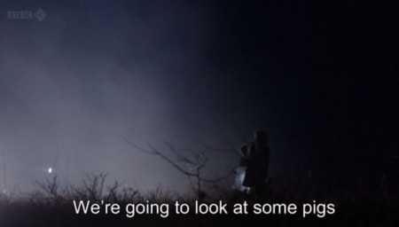

Saturday, September the 16th, 2017
back to: title, date or indexes

Last night I dreamt I went to the Nocturnal Pig Observatory again. But it was one of those dreams where everything happens in bright and battering sunlight. This made it particularly disturbing, because, with the exception of the unfamiliar light, everything else in the dream matched my memories of those times. I sat at the console, twiddling the knobs. I made adjustments to the pig scanner with a pair of pliers. I gazed out through the pig-proof plexiglass observation panel, while making indentations in my tally-stick.
One other detail that jarred was the presence, within the Observatory, of an albino chicken. I think it may have been a Vanbrugh chicken. It was so white, and the sunlight so glaring, that the chicken seemed to shimmer, like one imagines an Angel of the Lord come to earth upon a visitation.
I saw no pigs, so in that sense again the dream had an air of brute reality. Not once, in all my years of duty at the Nocturnal Pig Observatory, did I ever spot a real pig. Sham ones, yes, of course, and puppet pigs, and ghosts of pigs. But never a real, solid, porker. The flat wild bleak desolate windswept tarputa is inimical to pigs, thank heaven, but we must always be on the watch. Or at least we used to be, back in those days, when we were pig ignorant.
Now things have changed, many say for the better. Much of the tarputa is no longer as flat and wild and bleak and desolate and windswept as once it was. There are ice cream kiosks and miniature zoos and an aerodrome. There is a huge cement statue, on a plinth, of star of stage and screen Googie Withers (1917—2011). There is even, mischievously, an extensive modern state-of-the-art pig sty, though it is of course empty of pigs, including sham and puppet and ghost pigs.
Or is it? One would have to creep up to the edge of the pig sty in darkness, on a moonless night, and train one's portable pig scanner upon the most likely ghost-haunted parts of the sty, and wait, in silence and awe, for a sighting, to be duly recorded in one's ghost pig log, with a notch indented on one's tally-stick. Who among us can say we are truly prepared for such a task?
Since I awoke, I have been thinking, like a man obsessed, about that shimmering albino chicken. What did its dream-presence portend? I can wring no sense from it, as I prance like a ninny across the tarputa, on my way to buy a choc-ice from the kiosk, and to lay a bouquet of gladioli upon the cement feet of Googie Withers. That will make my Thursday complete. And when I settle down to sleep, will I dream of the Nocturnal Pig Observatory again? Will the past haunt me still? Do I dare to eat a peach? Is there honey still for tea? Where have all the flowers gone? What's so funny 'bout pigs, love, and understanding?
Hooting Yard on the Air, November the 9th, 2017 : “Whither The Bint Of Shelmerdox?” (starts around 24:11)